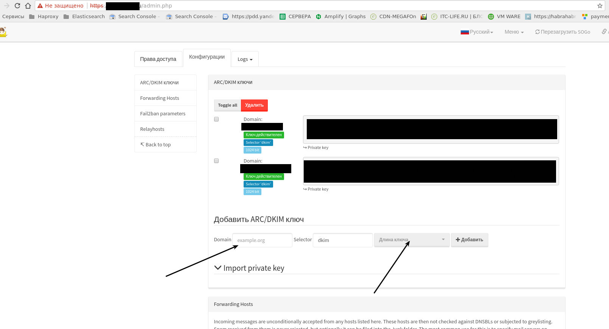
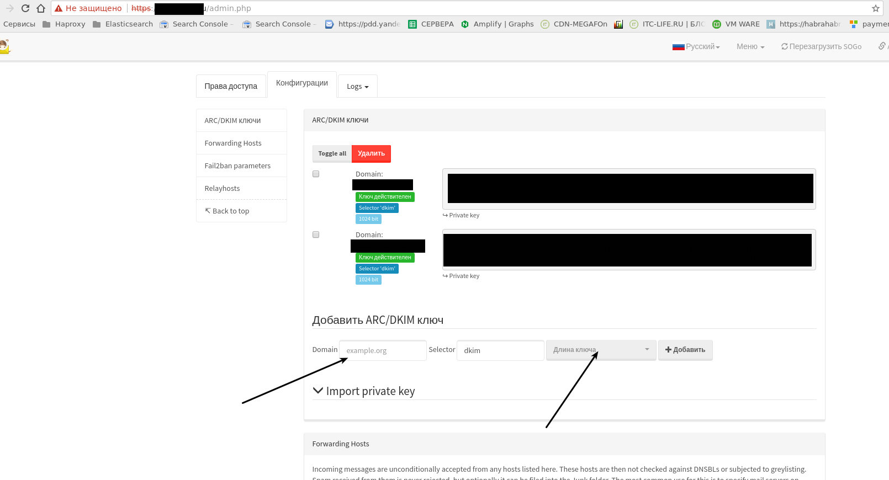

{kind=link}
{kind=link}

Создаем почтовые ящики

Posted on by human
Недавно наткнулся на довольно интересный комбаин из postfix-sogo-gui-панели для управления почтовыми сервисом. Называется он mailcow. В этой статье решил кратко описать как это все работает. Итак, приступим. Представим что нам надо настроить почтовый домен em.linux2be.com
Требования:
- OS linuxПакеты
- docker-ce- docker-compose
Доступные порты:
SMTP_PORT=25SMTPS_PORT=465SUBMISSION_PORT=587IMAP_PORT=143IMAPS_PORT=993POP_PORT=110POPS_PORT=995SIEVE_PORT=4190DOVEADM_PORT=127.0.0.1:19991HTTP=80HTTPS=443
Эти порты можно поменять ниже в mailcow.conf, если они у вас уже заняты, например другими докер контейнерами.
Приступаем к установке
Клонируем репозиторий
git clone https://github.com/mailcow/mailcow-dockerized.gitcd mailcow-dockerized
Запускаем генератор конфига.
./generate_config.shВводим
Мы сгенерировали конфиг на основе которого будет собираться наша связка из докер-контейнеров
Посмотреть его можно в файле
nano mailcow.confТеперь приступим к сборке
docker-compose pullЗапускаем
docker-compose up -dЧасть персистентных данных хранится в докерах volumes
docker volume ls | grep mail
Есле сервер на виртулке, и есть впс
сервер, можно все спроксировать на него
через nginx. Конфиг nginx тут.
Кладем его
в /etc/nginx/conf.d/http_em.linux2be.com.conf
upstream backend-em.linux2be.com {server 10.47.0.15:80;}server {listen 80;server_nameem.linux2be.comwww.em.linux2be.com;location ^~ /.well-known/acme-challenge/ {root /var/www/letsencrypt;}location / {return 301 https://em.linux2be.com$request_uri;}}server {listen 443 http2 ssl;server_nameem.linux2be.com;include /etc/nginx/ssl.d/linux2be.com/ssl.linux2be.com.conf;#return 200;location / {proxy_pass http://backend-em.linux2be.com/; # change thisproxy_connect_timeout 100;proxy_send_timeout 100;proxy_read_timeout 100;send_timeout 100;}}
Это для http.
Для почтовых сервисов делаем такой конфиг.
Добавляем эту часть конфига вниз файла /etc/nginx/nginx.conf
stream {log_format json_combined escape=json'{''"nginx.time":"$time_local",''"nginx.host":"",''"nginx.http_host":"",''"nginx.remote_addr":"$remote_addr",''"nginx.http_x_forwarded_for":"",''"nginx.request_method":"$protocol",''"nginx.request":"",''"nginx.status":"$status",''"nginx.upstream_status":"",''"nginx.body_bytes_sent":"$bytes_sent, $bytes_received",''"nginx.http_referer":"",''"nginx.request_time":"$session_time",''"nginx.upstream_response_time":"$upstream_connect_time",''"nginx.upstream_http_x_cache":"",''"nginx.uri":"",''"nginx.upstream_addr":"$upstream_addr",''"nginx.upstream_response_length":"$upstream_bytes_sent, $upstream_bytes_received",''"nginx.server_name":"",''"nginx.upstream_cache_status":"",''"nginx.user_agent":"",''"nginx.request_uri":"",''"nginx.request_body":""''}';error_log /dev/stdout;access_log /dev/stdout json_combined;#access_log /var/log/nginx/stream.log json_combined;include /etc/nginx/stream.d/*.conf;}
Создаем каталог каталог /etc/nginx/stream.d
И создаем конфиг /etc/nginx/stream.d/mail_proxy.conf
Содержимое
server {listen 25 reuseport;proxy_pass 10.47.0.15:25;}server {listen 587 reuseport;proxy_pass 10.47.0.15:587;}server {listen 465 reuseport;proxy_pass 10.47.0.15:465;}server {listen 110 reuseport;proxy_pass 10.47.0.15:110;}server {listen 143 reuseport;proxy_pass 10.47.0.15:143;}server {listen 993 reuseport;proxy_pass 10.47.0.15:993;}server {listen 995 reuseport;proxy_pass 10.47.0.15:995;}
Заходим по адресу https://em.linux2be.com
<a href="https://itc-life.ru/wp-content/uploads/2017/10/Выделение_070.png"><img class="alignnone size-large wp-image-3924" src="https://itc-life.ru/wp-content/uploads/2017/10/Выделение_070-1024×561.png" alt="" width="1024" height="561" /></a>
Данные для входа
Логин – admin
Пароль – moohoo
Меняем его после входа
ЗАмена серфиката postfix на свой
Чтобы не ругалось на сертификат – меняем его в конфиге postfix data/conf/postfix/main.cf на свой.
smtpd_tls_cert_file = /ssl.d/linux2be.com/certificate.crtsmtpd_tls_key_file = /ssl.d/linux2be.com/private.key
Далее добавляем почтовые домены
Создаем
почтовые ящики

Далее добавлем dkim. Выбираем длину ключа 2048

Добавляем сгенерированный ящик в relay host – не обязательно
Добавляем пароль для rspamd – не обязательно

Заходим в сгерерированнй почтовые ящики через
Теперь остается настроить нашу почту чтобы она не попадала в спам. Настройка dns записей. Почтовый домен будет em.linux2be.com
Добавляем записи A
em.linux2be.com server_ipmx.linux2be.com server_ip
Где сервере ip – ip вашего сервера или прокси
Dkim текстовые записи c именем селектора – dkim
dkim._domainkey.em.linux2be.comv=DKIM1;k=rsa;t=s;s=email;p=MIIBIjANBgkqhkiG9w0BAQEFAAOCAQ8AMIIBCg34KCAQEAqgkUMOXb7pIYVXxs3TMUgL/MyVubJB2Br6iJIIegR+9d+ucssa4y0pUs4LfzdqkoU8YjlX+V19osdk3EsjZYGYHddnzUkNwzVXOkyZx71rMiLvQhLpp3bFLHWiHixDR5ggN/07zz4OWRV6XApl51Ae2mNmu3S5R0NMePVe7lN6DRIuEDtDTSbVKg/avFM3YWQQe5/YH8dJLXf4UoOhKjhsLPsuiptexH7qkfSEMOGGo5hCyHMbeRoySksi829ZOE9YAlgbv/EyNpAHzTNM2kdlRugurc7W5pd9CG7E5G0bgY7grI37Apd/8eOpEYHSVCwXjattL6Bo3lYqGRrUYWpDzQIDAQAB
Dmarc текстовые записи
_dmarc.em.linux2be.com "v=DMARC1;p=reject;rua=mailto:webmaster@em.linux2be.com;ruf=mailto:webmaster@em.linux2be.com;"Adsp текстовые записи(deprecated in 2013)
_adsp.em.linux2be.co dkim=allНастраиваем запись mx для почтового домена em.linux2be.com
Добавим A запись (если нет)
mx.linux2be.com IP_ADDRESSДобавим mx запись (если нет)
em.linux2be.com IN MX 10 mx.linux2be.comДобавим spf записи
Есть мастер генерации spf записей – можете воспользоваться им.
https://www.spfwizard.net/Создаем spf запись
em.linux2be.com "v=spf1 mx a a:mx.linux2be.com"Проверяем записи
Проверка spf
https://www.dmarcanalyzer.com/spf/checker/Проверка mx записи
host -tMX em.linux2be.comДолжно вернуть
em.linux2be.com mail is handled by 10 mx.linux2be.com.Проверка _dmarc записи
dig TXT _dmarc.linux2be.comили
https://www.dmarcanalyzer.com/dmarc/dmarc-record-check/Проверка DKIM
https://www.dmarcanalyzer.com/dkim/dkim-check/Регистрируем свой сервер в почтовом сервисе google
Регистрируем по ссылке тут https://postmaster.google.com/
Добавляем txt запись предоставленную google и нажимаем далее.
em "запись google"Еще один докер.
https://github.com/tomav/docker-mailserverЧекаем сервер здесь
https://mxtoolbox.comPosted in Почтовый сервис